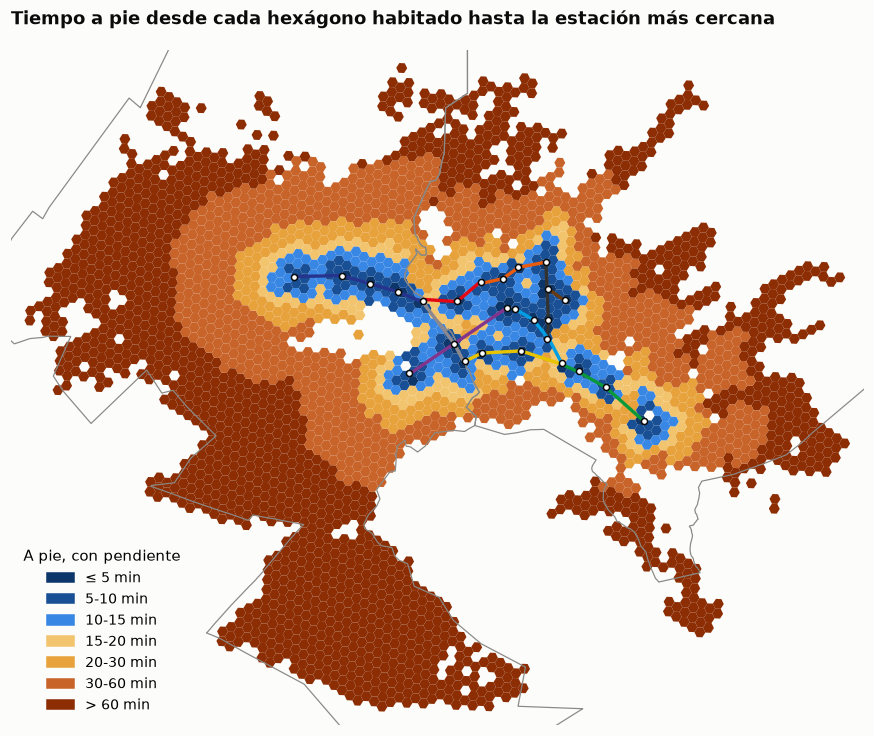
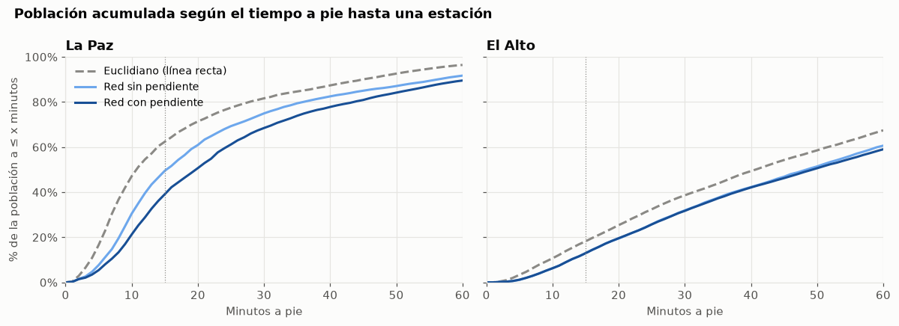
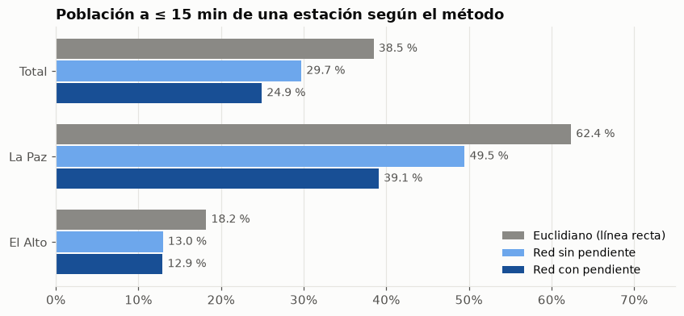
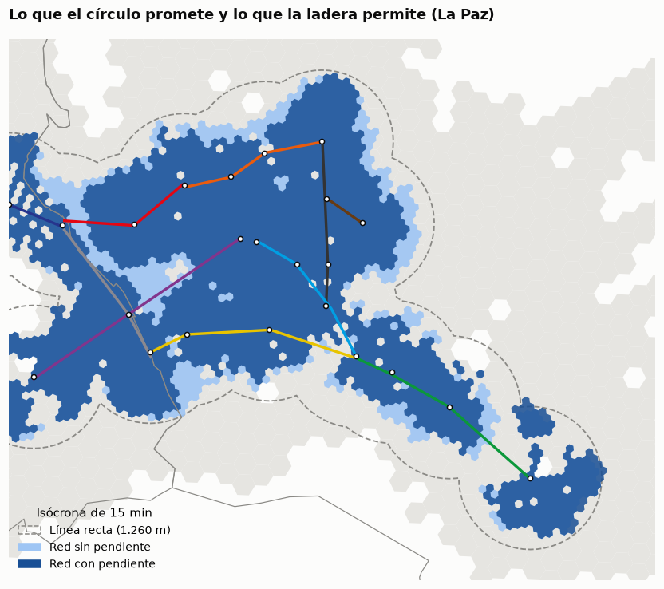
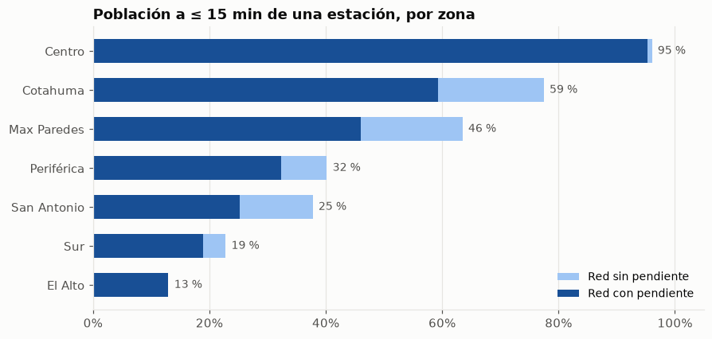
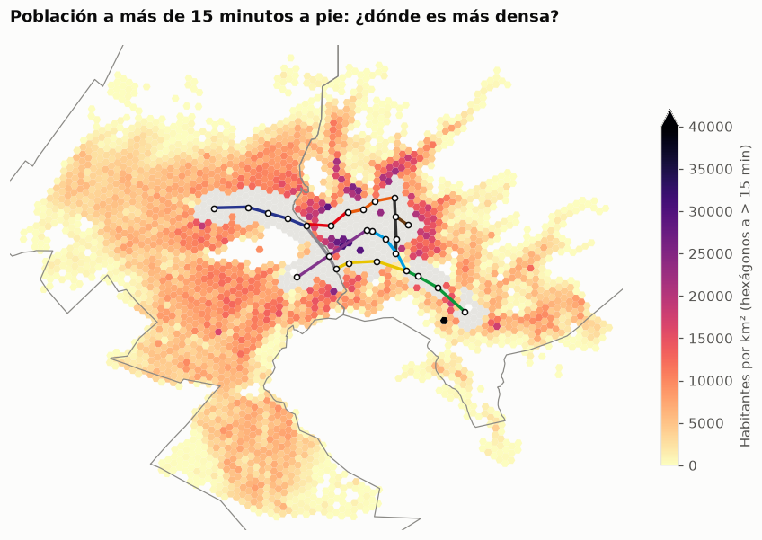
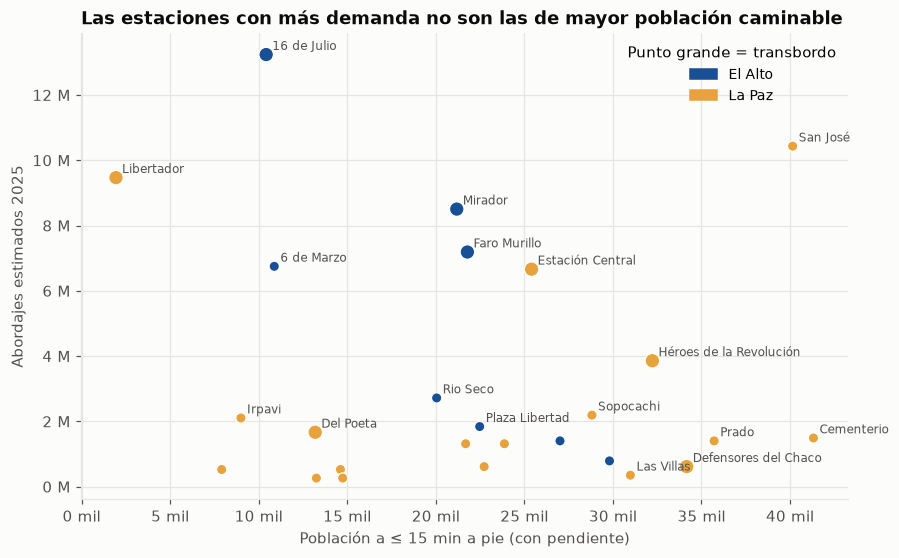
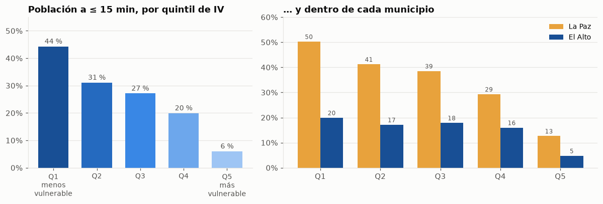
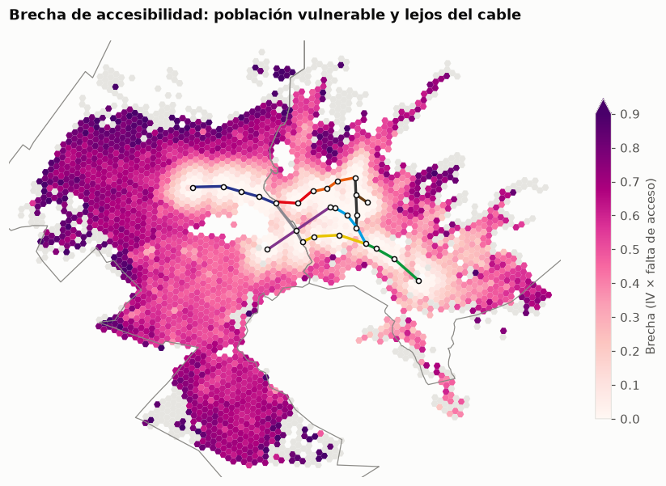

03 · Accesibilidad y cobertura: ¿quién queda lejos del cable?
Pregunta: ¿qué porcentaje de la población de La Paz y El Alto vive a 5, 10, 15 y 20 minutos a pie de una estación de Mi Teleférico, cuánto se equivoca un buffer en línea recta y quién queda afuera?
Datos y método (teleferico.access, teleferico.equidad; tiempos por arista del notebook 02): - Origen: los 32.860 manzanos del Censo 2024 (1,64 M de personas). Cada manzano toma su nodo de red más cercano y suma la caminata recta hasta él. - Destino: las 26 estaciones físicas. Las “puertas” son los nodos a ≤ 75 m de cada estación. - Tiempo de la casa a la estación (Dijkstra multi-origen sobre el grafo invertido), en tres variantes: 1. Euclidiano: distancia en línea recta a velocidad plana (equivale a un buffer de 420/840/1.260/1.680 m). 2. Plana: por la red de calles, sin pendiente (5,04 km/h). 3. Pendiente: por la red, con Tobler direccional y perfil cada 30 m (la variante de referencia). - “Cubierto” = a ≤ 15 minutos con pendiente.
1. El mapa: minutos a pie hasta la estación más cercana
Ver código
cortes = [0, 5, 10, 15, 20, 30, 60, np.inf]etiquetas = ["≤ 5", "5-10", "10-15", "15-20", "20-30", "30-60", "> 60"]colores = [viz.SECUENCIAL[6], viz.SECUENCIAL[5], viz.SECUENCIAL[3], "#f2c46d", "#e8a23c", "#c8642a", "#8c2d04"]cmap, norm = ListedColormap(colores), BoundaryNorm(cortes[:-1] + [1e9], len(colores))fig, ax = plt.subplots(figsize=(10, 8.5))hx.plot(ax=ax, column=hx["t_pendiente_min"].clip(upper=1e8), cmap=cmap, norm=norm, linewidth=0)viz.mapa_base(ax, mun, lineas, est, bounds)ax.legend(handles=[Patch(color=c, label=f"{e} min") for c, e inzip(colores, etiquetas)], title="A pie, con pendiente", loc="lower left", fontsize=9)ax.set_title("Tiempo a pie desde cada hexágono habitado hasta la estación más cercana")viz.guardar(fig, "03_mapa_tiempo")plt.show()

Lectura: - La red forma un corredor angosto: el eje este-oeste de El Alto (línea Azul hasta Río Seco), la bajada por la Ceja y el valle central de La Paz hasta Irpavi. A ~1,5 km del cable el tiempo ya supera los 20-30 minutos. - La mitad de la población vive a más de 31 minutos a pie de una estación (mediana ponderada). - Las grandes manchas sin acceso a pie son el norte y el oeste de El Alto, el sur de El Alto y, en La Paz, la zona Sur más allá de Irpavi y las laderas altas del norte y del este.
2. Cobertura por banda de tiempo
Ver código
tabla = pd.concat([ac.cobertura(acc), ac.cobertura(acc, "municipio")])tabla = tabla[tabla["escenario"] =="pendiente"].set_index("grupo").drop(columns="escenario")tabla["no_cubierta_15"] = tabla["poblacion"] * (100- tabla["pct_15"]) /100tabla.style.format({"poblacion": viz.fmt_int, "no_cubierta_15": viz.fmt_int} | {f"pct_{b}": "{:.1f} %"for b in ac.BANDAS_MIN})
poblacion
pct_5
pct_10
pct_15
pct_20
no_cubierta_15
grupo
Total
1.635.435
3.1 %
13.1 %
24.9 %
33.8 %
1.227.666
El Alto
885.210
1.2 %
6.3 %
12.9 %
19.6 %
770.780
La Paz
750.225
5.4 %
21.3 %
39.1 %
50.7 %
456.886
Ver código
curvas = pd.concat([ac.curva_cobertura(acc, v, por="municipio").assign(escenario=v) for v in ESC])fig, axs = plt.subplots(1, 2, figsize=(11, 4), sharey=True)for ax, m inzip(axs, ["La Paz", "El Alto"]):for v, nombre in ESC.items(): c = curvas[(curvas["grupo"] == m) & (curvas["escenario"] == v)] ax.plot(c["minutos"], c["pct"], color=COL_ESC[v], label=nombre, ls="--"if v =="euclidiano"else"-") ax.axvline(15, color=viz.TINTA_3, lw=0.8, ls=":") ax.set_title(m) ax.set_xlabel("Minutos a pie") ax.set_xlim(0, 60) ax.set_ylim(0, 100) ax.yaxis.set_major_formatter(mticker.PercentFormatter())axs[0].set_ylabel("% de la población a ≤ x minutos")axs[0].legend(loc="upper left", fontsize=9)fig.suptitle("Población acumulada según el tiempo a pie hasta una estación", x=0.02, ha="left", fontweight="bold", fontsize=12)fig.tight_layout()viz.guardar(fig, "03_curvas_cobertura")plt.show()

Lectura: - Solo 1 de cada 4 personas (24,9 %, ~408 mil) vive a 15 minutos o menos de una estación. 1,23 M de personas quedan afuera. - La brecha entre municipios es enorme: El Alto, 12,9 %, frente a La Paz, 39,1 %. Más de 770 mil alteños (87 %) viven a más de 15 minutos. - En El Alto las tres curvas casi coinciden en la red: el altiplano es plano y la pendiente no cambia nada. En La Paz las curvas se separan: la pendiente desplaza toda la distribución hacia la derecha.
3. Hipótesis 1: la línea recta sobreestima la cobertura
Ver código
comp = pd.concat([ac.cobertura(acc), ac.cobertura(acc, "municipio")])pivot = comp.pivot(index="grupo", columns="escenario", values="pct_15")[list(ESC)].loc[["Total", "La Paz", "El Alto"]]fig, ax = plt.subplots(figsize=(9, 3.8))y = np.arange(len(pivot))for i, v inenumerate(ESC): ax.barh(y + (i -1) *0.26, pivot[v], height=0.24, color=COL_ESC[v], label=ESC[v])for yy, val inzip(y, pivot[v]): ax.text(val +0.6, yy + (i -1) *0.26, f"{val:.1f} %", va="center", fontsize=9, color=viz.TINTA_2)ax.set_yticks(y, pivot.index)ax.invert_yaxis()ax.set_xlim(0, 75)ax.grid(axis="y", visible=False)ax.xaxis.set_major_formatter(mticker.PercentFormatter())ax.legend(loc="lower right", fontsize=9)ax.set_title("Población a ≤ 15 min de una estación según el método")viz.guardar(fig, "03_hipotesis_1")plt.show()pob = comp.drop_duplicates("grupo").set_index("grupo")["poblacion"]personas = pivot.mul(pob.loc[pivot.index], axis=0) /100pd.DataFrame({"% euclidiano": pivot["euclidiano"], "% plana": pivot["plana"], "% pendiente": pivot["pendiente"],"personas sobreestimadas (euclid. − pend.)": personas["euclidiano"] - personas["pendiente"],"personas sobreestimadas (plana − pend.)": personas["plana"] - personas["pendiente"],"sobreestimación relativa euclid. (%)": (pivot["euclidiano"] / pivot["pendiente"] -1) *100,}).style.format("{:,.1f}").format(viz.fmt_int, subset=pd.IndexSlice[:, ["personas sobreestimadas (euclid. − pend.)","personas sobreestimadas (plana − pend.)"]])

% euclidiano
% plana
% pendiente
personas sobreestimadas (euclid. − pend.)
personas sobreestimadas (plana − pend.)
sobreestimación relativa euclid. (%)
grupo
Total
38.5
29.7
24.9
221.439
78.432
54.3
La Paz
62.4
49.5
39.1
174.637
78.031
59.5
El Alto
18.2
13.0
12.9
46.802
401
40.9
El clásico buffer de 500 m alrededor de cada estación (≈ 6 minutos en llano) contiene al 12,9 % de la población. Equivale a medir solo la cobertura “inmediata”.
Dónde se equivoca más la línea recta
Isócronas de 15 minutos en el centro de La Paz: el círculo de 1.260 m (15 min en línea recta), la red sin pendiente y la red con pendiente.
Ver código
fig, ax = plt.subplots(figsize=(10, 8))zoom = est.query("municipio == 'La Paz'").total_bounds + np.array([-2200, -1800, 2200, 1800])circ = gpd.GeoSeries(est.buffer(15*60* ac.V_PLANA_MS).union_all(), crs=CRS_METRIC)hx.plot(ax=ax, color=viz.GRILLA, linewidth=0)circ.plot(ax=ax, facecolor="none", edgecolor=viz.TINTA_3, lw=1.2, ls="--")iso.query("escenario == 'plana' and banda_min == 15").plot(ax=ax, color=viz.SECUENCIAL[1], alpha=0.9)iso.query("escenario == 'pendiente' and banda_min == 15").plot(ax=ax, color=viz.SECUENCIAL[5], alpha=0.85)viz.mapa_base(ax, mun, lineas, est, zoom)ax.legend(handles=[Patch(facecolor="none", edgecolor=viz.TINTA_3, ls="--", label="Línea recta (1.260 m)"), Patch(color=viz.SECUENCIAL[1], label="Red sin pendiente"), Patch(color=viz.SECUENCIAL[5], label="Red con pendiente")], loc="lower left", fontsize=9, title="Isócrona de 15 min")ax.set_title("Lo que el círculo promete y lo que la ladera permite (La Paz)")viz.guardar(fig, "03_isocronas_la_paz")plt.show()

Lectura (hipótesis 1, confirmada): - La línea recta dice que el 38,5 % vive a ≤ 15 min; con la red y la pendiente es el 24,9 %. El buffer euclidiano sobreestima la cobertura en ~221 mil personas (+54 % relativo). - De esa diferencia, ~143 mil personas se deben a la forma de la red (rodeos, quebradas, autopistas sin cruce) y ~78 mil a la pendiente. - La pendiente pesa solo en La Paz: baja la cobertura de 49,5 % a 39,1 % (−10,4 pp, 78 mil personas). En El Alto la diferencia es de 401 personas. Es lo que predecía la hipótesis 1: el efecto se concentra en las laderas.
Robustez: ¿depende el resultado de cómo se mide la pendiente?
En el notebook 02, el sobrecosto de la red varía entre 12 % y 33 % según el tratamiento del DSM. Se recalcula la cobertura con las variantes extremas:
Ver código
nod = ac.nodos()a = ac.aristas_tiempo()mz = ac.manzanos_centroides()variantes = {"Pendiente neta (sin perfil)": a["t_neta_s"], "Perfil 30 m, σ = 1 (referencia)": a["t_pendiente_s"]}sigma0 = ac.SIGMA_SUAVIZADO_PXtry: ac.SIGMA_SUAVIZADO_PX =0.0 variantes["Perfil 15 m, sin suavizar (cota alta)"] = ac.perfil_aristas(a, paso_m=15)["t_pendiente_s"]finally: ac.SIGMA_SUAVIZADO_PX = sigma0filas = []for nombre, t in variantes.items(): T = ac.tiempos_por_estacion(a.assign(t_pendiente_s=t), nod, est) r, _ = ac.acceso_manzanos(mz, nod, est, {"pendiente": T["pendiente"]}) r = r.merge(acc[["codigo", "t_plana_min"]], on="codigo") # el euclidiano ya viene en r c = ac.cobertura(r, "municipio").query("escenario == 'pendiente'").set_index("grupo")["pct_15"] filas.append({"variante": nombre, "Total": ac.cobertura(r).set_index("escenario").loc["pendiente", "pct_15"],**c.to_dict()})pd.DataFrame(filas).set_index("variante")
Total
El Alto
La Paz
variante
Pendiente neta (sin perfil)
25.8
12.7
41.3
Perfil 30 m, σ = 1 (referencia)
24.9
12.9
39.1
Perfil 15 m, sin suavizar (cota alta)
20.4
11.2
31.2
Lectura: el círculo de 15 minutos alrededor de las estaciones de La Paz cubre casi todo el valle central, pero la isócrona real queda recortada en las laderas: al norte de las líneas Roja y Naranja, al oeste de la Morada y a ambos lados de la Verde. Las franjas celestes son lo que la pendiente le quita a la caminata plana. Están justo en los bordes que suben.
4. Ir no es lo mismo que volver
El tiempo de la casa a la estación (ida) y de la estación a la casa (vuelta) difiere cuando hay pendiente.
Lectura: con cualquier tratamiento del DEM, la cobertura total queda entre 20 % y 26 %, y la de La Paz entre 31 % y 41 %. Siempre está muy por debajo de la red plana (49,5 %) y del buffer euclidiano (62,4 %). La conclusión de la hipótesis 1 no depende de la elección del perfil. La referencia (perfil cada 30 m, σ = 1) queda en la parte conservadora del rango: si algo, sobreestima la cobertura.
5. Por macrodistrito (La Paz) y El Alto
OSM solo tiene los 7 macrodistritos urbanos de La Paz. Para El Alto (14 distritos, solo 3 en OSM) se usa el municipio completo y el mapa de hexágonos.
Ver código
z = ac.cobertura(acc, "zona")zp = z.pivot(index="grupo", columns="escenario", values="pct_15")[list(ESC)]zp["poblacion"] = z.drop_duplicates("grupo").set_index("grupo")["poblacion"]zp = zp[zp["poblacion"] >15_000].sort_values("pendiente")zp["no_cubierta"] = zp["poblacion"] * (100- zp["pendiente"]) /100med = acc.groupby("zona").apply(lambda g: ac.mediana_ponderada(g["t_pendiente_min"].clip(upper=60), g["personas"]), include_groups=False)zp["mediana_min"] = medfig, ax = plt.subplots(figsize=(9, 4.2))y = np.arange(len(zp))ax.barh(y, zp["plana"], color=viz.SECUENCIAL[1], height=0.6, label="Red sin pendiente")ax.barh(y, zp["pendiente"], color=viz.SECUENCIAL[5], height=0.6, label="Red con pendiente")for yy, (p_, pl) inenumerate(zip(zp["pendiente"], zp["plana"])): ax.text(max(p_, pl) +1, yy, f"{p_:.0f} %", va="center", fontsize=9, color=viz.TINTA_2)ax.set_yticks(y, zp.index)ax.set_xlim(0, 105)ax.xaxis.set_major_formatter(mticker.PercentFormatter())ax.grid(axis="y", visible=False)ax.legend(loc="lower right", fontsize=9)ax.set_title("Población a ≤ 15 min de una estación, por zona")viz.guardar(fig, "03_zonas")plt.show()zp.style.format("{:.1f}").format(viz.fmt_int, subset=["poblacion", "no_cubierta"])

escenario
euclidiano
plana
pendiente
poblacion
no_cubierta
mediana_min
grupo
El Alto
18.2
13.0
12.9
885.210
770.780
49.4
Sur
36.7
22.8
18.9
168.094
136.274
31.0
San Antonio
59.8
37.8
25.2
110.261
82.469
24.3
Periférica
52.1
40.2
32.3
142.143
96.252
23.6
Max Paredes
77.7
63.5
46.0
117.233
63.279
15.8
Cotahuma
87.0
77.5
59.3
140.913
57.326
13.0
Centro
100.0
96.0
95.3
52.793
2.498
7.3
Lectura: en Max Paredes, Periférica y San Antonio, volver a casa desde la estación es más difícil que ir: la cobertura de vuelta es 5-6 pp menor, porque las estaciones están abajo y las viviendas en la ladera. Bajar al cable es fácil; subir de regreso, no. En El Alto y el Centro no hay diferencia; en la zona Sur, la vuelta es apenas más fácil.
6. ¿Dónde vive la población no cubierta?
Densidad de los hexágonos donde vive la población a más de 15 minutos (insumo para los bolsones del notebook 05).
lejos = hx[~hx["cubierto"]]fig, ax = plt.subplots(figsize=(10, 8.5))hx[hx["cubierto"]].plot(ax=ax, color=viz.GRILLA, linewidth=0)lejos.plot(ax=ax, column="densidad_hab_km2", cmap="magma_r", vmin=0, vmax=40_000, linewidth=0, legend=True, legend_kwds={"shrink": 0.55, "label": "Habitantes por km² (hexágonos a > 15 min)"})viz.mapa_base(ax, mun, lineas, est, bounds)ax.set_title("Población a más de 15 minutos a pie: ¿dónde es más densa?")viz.guardar(fig, "03_no_cubiertos_densidad")plt.show()

Lectura: - Ranking de cobertura a ≤ 15 min: Centro (95 %) → Cotahuma (59 %) → Max Paredes (46 %) → Periférica (32 %) → San Antonio (25 %) → Sur (19 %) → El Alto (13 %). - La pendiente le quita más puntos a Cotahuma y Max Paredes (−17 a −18 pp frente a la red plana). En términos relativos, San Antonio pierde un tercio de su cobertura (de 38 % a 25 %). - En números absolutos, las mayores poblaciones no cubiertas son El Alto (771 mil, mediana de 49 min), la zona Sur (136 mil) y Periférica (96 mil).
Lectura: - La población no cubierta no está dispersa: ~1,02 M de las 1,23 M personas a más de 15 minutos viven en la mitad más densa de los hexágonos (635 mil en El Alto y 384 mil en La Paz). - Los hexágonos no cubiertos más densos (20-30 mil hab/km²) están en las laderas de La Paz, justo en el borde de las isócronas (norte de las líneas Roja y Naranja, alrededor de la Morada). Son los candidatos naturales para estaciones adicionales en líneas existentes. - En El Alto la densidad es menor (8-15 mil hab/km²), pero la mancha es enorme y continua al norte y al sur del corredor. Ahí cabe una línea nueva. Los bolsones se delimitan con DBSCAN en el notebook 05.
7. Captación de cada estación frente a su demanda (anticipo del notebook 04)
Ver código
dem = demanda.estaciones_fisicas(demanda.cargar())ce = cap.merge(dem[["slug", "pasajeros_est", "lineas", "transbordo"]], on="slug")ce["pasajeros_por_hab_15"] = ce["pasajeros_est"] / ce["pob_pendiente_15"]fig, ax = plt.subplots(figsize=(9, 5.5))col = ce["municipio"].map({"El Alto": viz.SECUENCIAL[5], "La Paz": "#e8a23c"})ax.scatter(ce["pob_pendiente_15"], ce["pasajeros_est"], c=col, s=np.where(ce["transbordo"], 90, 45), edgecolor="white", lw=0.8, zorder=3)for r_ in ce[(ce["pasajeros_est"] >1.6e6) | (ce["pob_pendiente_15"] >30_000)].itertuples(): ax.annotate(r_.nombre, (r_.pob_pendiente_15, r_.pasajeros_est), xytext=(4, 3), textcoords="offset points", fontsize=8, color=viz.TINTA_2)ax.xaxis.set_major_formatter(mticker.FuncFormatter(viz.miles))ax.yaxis.set_major_formatter(mticker.FuncFormatter(viz.millones))ax.set_xlabel("Población a ≤ 15 min a pie (con pendiente)")ax.set_ylabel("Abordajes estimados 2025")ax.legend(handles=[Patch(color=viz.SECUENCIAL[5], label="El Alto"), Patch(color="#e8a23c", label="La Paz")], loc="upper right", fontsize=9, title="Punto grande = transbordo")ax.set_title("Las estaciones con más demanda no son las de mayor población caminable")viz.guardar(fig, "03_captacion_vs_demanda")plt.show()rho = ce[["pob_pendiente_10", "pob_pendiente_15", "pob_pendiente_20", "pob_plana_15", f"pob_buffer_{ac.BUFFER_CLASICO_M}m"]].corrwith( ce["pasajeros_est"], method="spearman")print("Correlación de Spearman con los abordajes 2025:")for k, v in rho.items():print(f" {k:<20}{v:+.2f}")ce.sort_values("pasajeros_est", ascending=False)[ ["nombre", "municipio", "lineas", "pasajeros_est", "pob_pendiente_10", "pob_pendiente_15","pob_exclusiva_pendiente_15", "pasajeros_por_hab_15"]].set_index("nombre").style.format( {"pasajeros_est": viz.fmt_int, "pob_pendiente_10": viz.fmt_int, "pob_pendiente_15": viz.fmt_int,"pob_exclusiva_pendiente_15": viz.fmt_int, "pasajeros_por_hab_15": "{:,.0f}"})

Correlación de Spearman con los abordajes 2025:
pob_pendiente_10 -0.12
pob_pendiente_15 -0.08
pob_pendiente_20 -0.07
pob_plana_15 -0.11
pob_buffer_500m -0.13
municipio
lineas
pasajeros_est
pob_pendiente_10
pob_pendiente_15
pob_exclusiva_pendiente_15
pasajeros_por_hab_15
nombre
16 de Julio
El Alto
Azul, Plateada, Roja
13.238.503
4.506
10.423
5.867
1,270
San José
La Paz
Morada
10.432.993
17.577
40.150
27.276
260
Libertador
La Paz
Amarilla, Celeste, Verde
9.468.598
182
1.942
1.336
4,876
Mirador
El Alto
Amarilla, Plateada
8.504.204
9.476
21.185
15.383
401
Faro Murillo
El Alto
Morada, Plateada
7.189.121
8.939
21.785
15.321
330
6 de Marzo
El Alto
Morada
6.750.760
3.811
10.880
10.461
620
Estación Central
La Paz
Naranja, Roja
6.663.088
8.007
25.406
15.487
262
Héroes de la Revolución
La Paz
Blanca, Naranja
3.857.577
12.676
32.230
26.161
120
Rio Seco
El Alto
Azul
2.717.838
5.814
20.048
19.449
136
Sopocachi
La Paz
Amarilla
2.191.805
12.589
28.816
24.187
76
Irpavi
La Paz
Verde
2.104.133
3.989
9.000
9.000
234
Plaza Libertad
El Alto
Azul
1.841.116
9.593
22.480
14.459
82
Del Poeta
La Paz
Blanca, Celeste
1.665.772
5.983
13.193
7.987
126
Cementerio
La Paz
Roja
1.490.428
16.162
41.325
38.258
36
Prado
La Paz
Celeste
1.402.755
13.477
35.717
7.284
39
UPEA
El Alto
Azul
1.402.755
10.694
27.014
21.341
52
Próceres de la Independencia
La Paz
Blanca
1.315.083
13.110
21.687
13.729
61
Buenos Aires
La Paz
Amarilla
1.315.083
8.688
23.872
22.148
55
Plaza La Paz
El Alto
Azul
789.050
13.275
29.809
21.274
26
Armentia
La Paz
Naranja
613.705
11.634
22.732
15.722
27
Defensores del Chaco
La Paz
Blanca, Café
613.705
13.312
34.168
16.682
18
Alto Obrajes
La Paz
Verde
526.033
6.535
14.619
13.079
36
Periférica
La Paz
Naranja
526.033
4.126
7.912
6.711
66
Las Villas
La Paz
Café
350.689
13.679
30.988
21.216
11
Obrajes
La Paz
Verde
263.017
4.652
13.260
11.339
20
Teatro al Aire Libre
La Paz
Celeste
263.017
4.256
14.745
6.612
18
Lectura: - La población caminable no explica la demanda de una estación (Spearman ≈ −0,1). Las estaciones con más abordajes son cabeceras y transbordos: 16 de Julio (13,2 M con solo ~10 mil vecinos a pie), Libertador (9,5 M con ~2 mil), Mirador, Faro Murillo. Su captación real llega en minibús y desde otras líneas. - Las estaciones residenciales del valle (Cementerio, Prado, Las Villas, Defensores del Chaco) tienen 30-40 mil vecinos a pie, pero pocos abordajes: la gente que vive cerca del centro tiene alternativas o no necesita el cable para sus viajes. - Implicación para el notebook 04: el modelo de demanda necesita variables de red (transbordo, cabecera, conexión con El Alto) además de la población caminable. Con n = 26, la población a pie sola sirve de poco.
8. Lente de equidad: ¿quién queda lejos?
Índice de vulnerabilidad (IV) por manzano con 7 carencias de la ficha censal: sin educación superior, sin seguro de salud, sin agua por red, sin alcantarillado, sin internet, hacinamiento alto y piso de tierra. El IV es el promedio de los rangos percentiles ponderados por población (0 a 1); los quintiles dividen a la población en cinco grupos del mismo tamaño. Cubre el 96 % de la población.
Ver código
qt = eqm.cobertura_por_quintil(eq)qm = eqm.cobertura_por_quintil(eq, por="municipio")fig, axs = plt.subplots(1, 2, figsize=(11, 3.8), gridspec_kw={"width_ratios": [1, 1.4]})ax = axs[0]ax.bar(range(5), qt["pct_cubierta_15min"], color=viz.SECUENCIAL[1:6][::-1], width=0.7)for i, v inenumerate(qt["pct_cubierta_15min"]): ax.text(i, v +1, f"{v:.0f} %", ha="center", fontsize=9, color=viz.TINTA_2)ax.set_xticks(range(5), ["Q1\nmenos\nvulnerable", "Q2", "Q3", "Q4", "Q5\nmás\nvulnerable"], fontsize=9)ax.yaxis.set_major_formatter(mticker.PercentFormatter())ax.set_ylim(0, 55)ax.grid(axis="x", visible=False)ax.set_title("Población a ≤ 15 min, por quintil de IV")ax = axs[1]w =0.38for j, (m, c) inenumerate([("La Paz", "#e8a23c"), ("El Alto", viz.SECUENCIAL[5])]): vals = qm.loc[m, "pct_cubierta_15min"] ax.bar(np.arange(5) + (j -0.5) * w, vals, width=w, color=c, label=m)for i, v inenumerate(vals): ax.text(i + (j -0.5) * w, v +1, f"{v:.0f}", ha="center", fontsize=8, color=viz.TINTA_2)ax.set_xticks(range(5), ["Q1", "Q2", "Q3", "Q4", "Q5"])ax.yaxis.set_major_formatter(mticker.PercentFormatter())ax.set_ylim(0, 60)ax.grid(axis="x", visible=False)ax.legend(fontsize=9)ax.set_title("… y dentro de cada municipio")fig.tight_layout()viz.guardar(fig, "03_equidad_quintiles")plt.show()composicion = (qm["poblacion"].unstack(0) / qm["poblacion"].unstack(0).sum() *100).round(1)print("Composición de cada municipio por quintil de IV (% de su población):")pd.concat([qt.round(1), composicion.add_prefix("% pob. ")], axis=1)

Composición de cada municipio por quintil de IV (% de su población):
poblacion
pct_cubierta_15min
t_medio_min
% pob. El Alto
% pob. La Paz
iv_quintil
Q1 (menos vulnerable)
314027
44.3
23.9
7.3
35.0
Q2
314143
31.1
28.9
15.5
25.3
Q3
314053
27.2
31.6
20.4
19.6
Q4
314073
20.0
36.3
25.9
13.0
Q5 (más vulnerable)
314102
6.0
48.1
31.0
7.0
Ver código
print("Correlación de Spearman entre cada carencia y el tiempo a la estación (por manzano):")eqm.correlaciones(eq).rename(index={k: v[0] for k, v in eqm.INDICADORES.items()} | {"iv": "Índice de vulnerabilidad"})
Correlación de Spearman entre cada carencia y el tiempo a la estación (por manzano):
19+ años sin educación superior 0.5
Sin seguro de salud -0.1
Vivienda sin agua por cañería de red 0.2
Vivienda sin alcantarillado 0.5
Hogar sin internet 0.2
Vivienda con hacinamiento alto 0.1
Vivienda con piso de tierra 0.3
Índice de vulnerabilidad 0.4
dtype: float64
Brecha de accesibilidad: vulnerabilidad × falta de acceso
brecha = IV × falta de acceso, con la falta de acceso en 0 a ≤ 10 min y en 1 a ≥ 30 min. Un hexágono con brecha alta tiene a la vez población vulnerable y lejana.
Ver código
bh = hx.merge(eqm.por_h3(eq), on="h3", how="left")fig, ax = plt.subplots(figsize=(10, 8.5))bh.plot(ax=ax, column="brecha", cmap="RdPu", vmin=0, vmax=0.9, linewidth=0, legend=True, missing_kwds={"color": viz.GRILLA}, legend_kwds={"shrink": 0.55, "label": "Brecha (IV × falta de acceso)"})viz.mapa_base(ax, mun, lineas, est, bounds)ax.set_title("Brecha de accesibilidad: población vulnerable y lejos del cable")viz.guardar(fig, "03_brecha")plt.show()bh["personas_brecha"] = bh["personas"] * bh["brecha"].fillna(0)bh["pob_brecha_alta"] = bh["personas"] * (bh["brecha"] >=0.6)top = bh.groupby("zona")[["personas", "pob_brecha_alta", "personas_brecha"]].sum()top["brecha_media"] = top.pop("personas_brecha") / top["personas"]top["% pob. en brecha alta (≥ 0,6)"] = top["pob_brecha_alta"] / top["personas"] *100top.sort_values("pob_brecha_alta", ascending=False).style.format( {"personas": viz.fmt_int, "pob_brecha_alta": viz.fmt_int, "brecha_media": "{:.2f}","% pob. en brecha alta (≥ 0,6)": "{:.1f} %"})

personas
pob_brecha_alta
brecha_media
% pob. en brecha alta (≥ 0,6)
zona
El Alto
879.364
314.632
0.48
35.8 %
Periférica
144.066
9.426
0.28
6.5 %
Sur
167.377
7.971
0.28
4.8 %
La Paz (otros)
10.689
6.406
0.56
59.9 %
Max Paredes
118.271
4.219
0.20
3.6 %
San Antonio
110.812
3.776
0.27
3.4 %
Mallasa
9.236
1.180
0.40
12.8 %
Cotahuma
145.555
358
0.14
0.2 %
Centro
50.065
0
0.01
0.0 %
Lectura: - La cobertura cae a lo largo del gradiente de vulnerabilidad: del 44 % en el quintil menos vulnerable al 6 % en el más vulnerable (tiempo medio de 24 a 48 minutos). - No es solo un efecto “El Alto frente a La Paz”: dentro de cada municipio el quintil más vulnerable es el peor cubierto (El Alto: 20 % en Q1 frente a 5 % en Q5; La Paz: 50 % frente a 13 %). - El Alto concentra la vulnerabilidad: el 31 % de su población está en Q5, frente al 7 % de La Paz. - Las carencias más asociadas a vivir lejos del cable son la falta de educación superior y de alcantarillado (ρ ≈ 0,5): las periferias urbanas más nuevas y menos consolidadas. - ~546 mil personas de los quintiles 4 y 5 viven a más de 15 minutos de una estación. - La brecha alta (≥ 0,6) se concentra en El Alto: 315 mil personas (36 % de su población), sobre todo en el norte, el oeste y el sur. En La Paz aparece en las laderas altas de Periférica y en la zona Sur.
9. Conclusiones
#
Hallazgo
Implicación
1
Solo el 24,9 % de la población (~408 mil) vive a ≤ 15 min a pie de una estación; 1,23 M quedan afuera. Mediana: 31 min
El cable sirve a un corredor angosto. La mayoría llega en minibús o no lo usa
2
El Alto: 12,9 % cubierto frente a La Paz: 39,1 %. 771 mil alteños a más de 15 min
La expansión debe priorizar El Alto (coincide con el notebook 01)
3
H1 confirmada: el buffer euclidiano dice 38,5 %; la red con pendiente, 24,9 % (sobreestimación de ~221 mil personas, +54 %). La pendiente sola quita 78 mil personas, todas en La Paz
Los estudios con buffers inflan la cobertura. La pendiente es indispensable en las laderas, irrelevante en el altiplano
4
El resultado es robusto al tratamiento del DSM (cobertura total entre 20 y 26 %)
Se mantiene el perfil cada 30 m con σ = 1 como referencia
5
En las laderas, la cobertura de vuelta (estación → casa) es 5-6 pp menor que la de ida
Las estaciones en el fondo del valle sirven peor a quien vive arriba
6
1,02 M de no cubiertos viven en la mitad más densa de los hexágonos. Los más densos están en los bordes de las laderas de La Paz y en la gran mancha alteña
Dos estrategias: estaciones intermedias en laderas paceñas y línea nueva en El Alto (notebook 05)
7
La población caminable no explica los abordajes por estación (ρ ≈ −0,1). Mandan las cabeceras y los transbordos
El modelo de demanda (notebook 04) debe incluir variables de red y de alimentación
8
Cobertura del 44 % (Q1) frente al 6 % (Q5) de vulnerabilidad, también dentro de cada municipio. ~546 mil personas vulnerables (Q4-Q5) sin acceso a pie
La nueva línea tiene un argumento de equidad, además del de demanda
Siguiente paso: modelo de demanda por estación (notebook 04) y bolsones de subcobertura y optimización de nuevas estaciones (notebook 05), ponderando la demanda por la población no cubierta y la brecha.
Anexo: exportación de datos para el sitio
Ver código
from teleferico.export_web import exportar_accesibilidadexportar_accesibilidad(acc, eq)